第二周（编程）
搭建一个可以识别猫的简单的神经网络
库介绍：
- numpy ：是用Python进行科学计算的基本软件包。
- h5py：是与H5文件中存储的数据集进行交互的常用软件包。
- matplotlib：是一个著名的库，用于在Python中绘制图表。
lr_utils 实现（加载数据集）
1 | def load_dataset(): |
其各值的含义:
- train_set_x_orig ：保存的是训练集里面的图像数据（本训练集有209张64x64的图像）。
- train_set_y_orig ：保存的是训练集的图像对应的分类值（【0 | 1】，0表示不是猫，1表示是猫）。
- test_set_x_orig ：保存的是测试集里面的图像数据（本训练集有50张64x64的图像）。
- test_set_y_orig ： 保存的是测试集的图像对应的分类值（【0 | 1】，0表示不是猫，1表示是猫）。
- classes ： 保存的是以bytes类型保存的两个字符串数据，数据为：[b’non-cat’ b’cat’]。
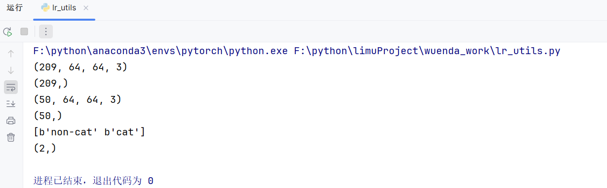
现在加载一张图片展示一下
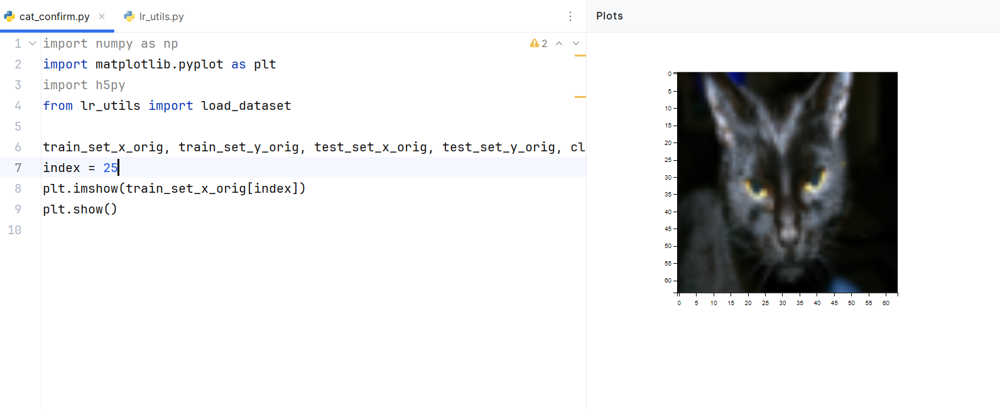
1 | train_set_x_orig, train_set_y_orig, test_set_x_orig, test_set_y_orig, classes = load_dataset() |
也可以同时查看多张图片
1 | train_set_x_orig, train_set_y_orig, test_set_x_orig, test_set_y_orig, classes = load_dataset() |
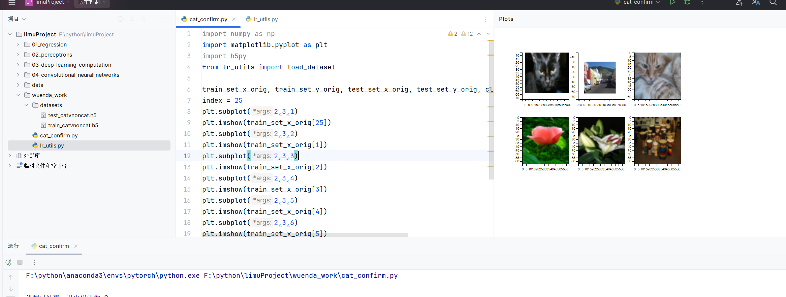
打印图片和对应的标签，现在打印第一张图，看看第一张图是否为猫
1 | train_set_x_orig, train_set_y_orig, test_set_x_orig, test_set_y_orig, classes = load_dataset() |
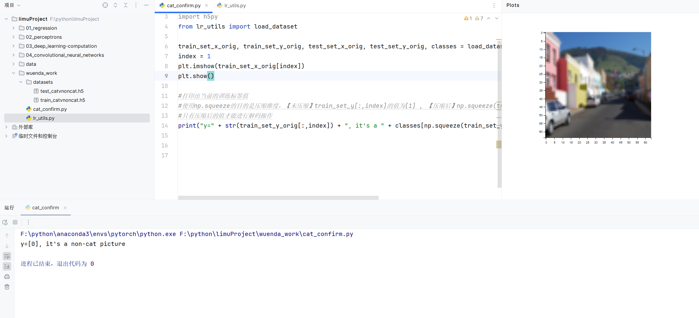
我们查看一下我们加载的图像数据集具体情况：
1 | m_train = train_set_y_orig.shape[1] #训练集里图片的数量。 |
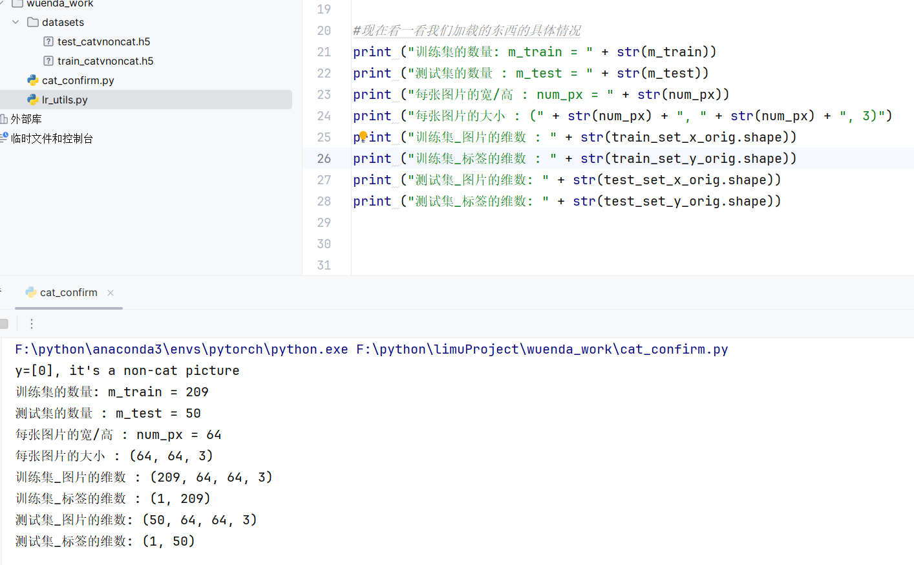
为了方便，我们要把维度为（64，64，3）的numpy数组重新构造为（64 x 64 x 3，1）的数组，要乘以3的原因是每张图片是由64x64像素构成的，而每个像素点由（R，G，B）三原色构成的，所以要乘以3。在此之后，我们的训练和测试数据集是一个numpy数组，【每列代表一个平坦的图像】 ，应该有 12288（特征数量）行和 209（样本数量）列。
当你想将形状（a，b，c，d）的矩阵X平铺成形状（b * c * d，a）的矩阵X_flatten时，可以使用以下代码：
1 | #X_flatten = X.reshape(X.shape [0]，-1).T ＃X.T是X的转置 |
这一段意思是指把数组变为209行的矩阵（因为训练集里有209张图片），但是我懒得算列有多少，于是我就用-1告诉程序你帮我算，最后程序算出来时12288列，我再最后用一个T表示转置，这就变成了12288行，209列。测试集亦如此。
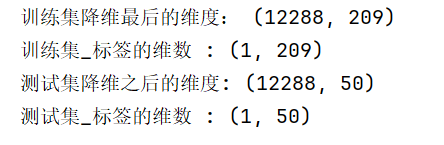
为了表示彩色图像，必须为每个像素指定红色，绿色和蓝色通道（RGB），因此像素值实际上是从0到255范围内的三个数字的向量。机器学习中一个常见的预处理步骤是对数据集进行居中和标准化，这意味着可以减去每个示例中整个numpy数组的平均值，然后将每个示例除以整个numpy数组的标准偏差。但对于图片数据集，它更简单，更方便，几乎可以将数据集的每一行除以255（像素通道的最大值），因为在RGB中不存在比255大的数据，所以我们可以放心的除以255，让标准化的数据位于 [0,1] 之间，现在标准化我们的数据集：
1 | train_set_x = train_set_x_flatten / 255 |
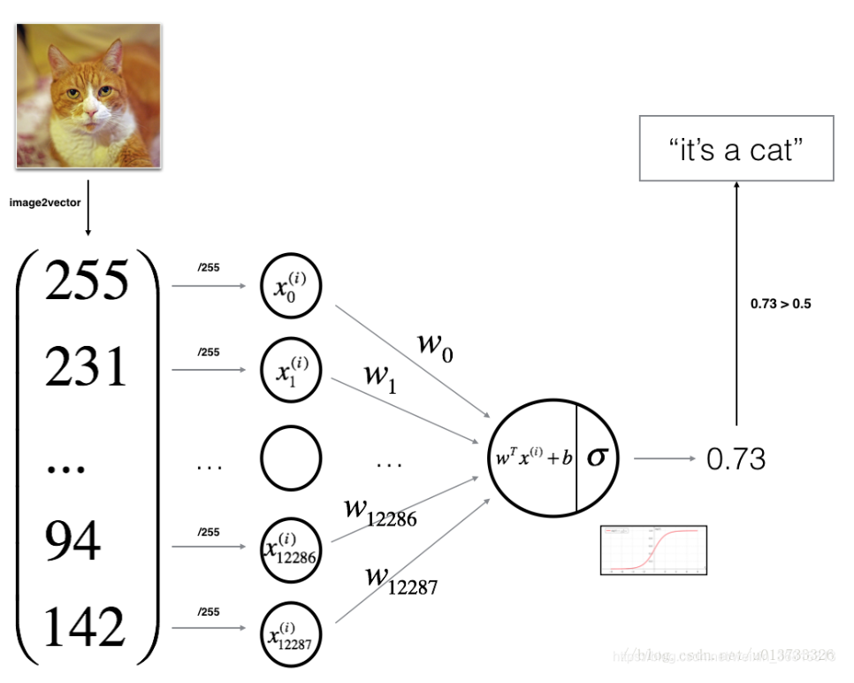
整理完数据进行神经网络构建：
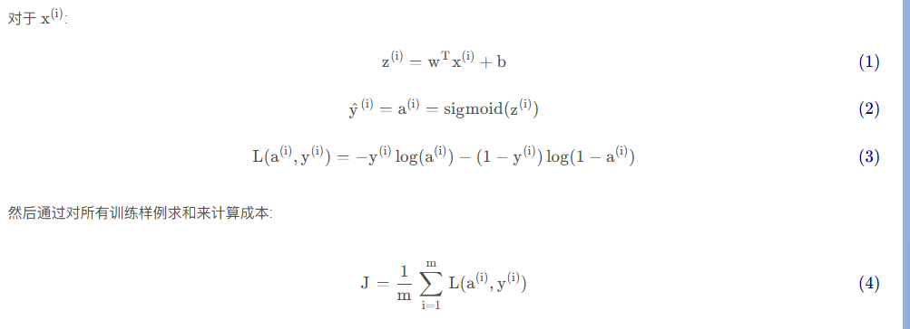
构建神经网络的步骤：
- 定义模型结构（例如输入特征的数量）
- 初始化模型的参数
- 循环：
3.1 计算当前损失（正向传播）
3.2 计算当前梯度（反向传播）
3.3 更新参数（梯度下降）
构建sigmoid函数：
1 | # 构建sigmoid |
初始化参数
1 | def initialize_with_zeros(dim): |
执行前向后向传播学习参数
1 | def propagate(w, b, X, Y): |
梯度下降更新参数
1 | def optimize(w , b , X , Y , num_iterations , learning_rate , print_cost = True): |
构建预测函数：
1 | def predict(w , b , X ): |
就目前而言，我们基本上把所有的东西都做完了，现在我们要把这些函数统统整合到一个model()函数中，届时只需要调用一个model()就基本上完成所有的事了。
1 | def model(X_train , Y_train , X_test , Y_test , num_iterations = 2000 , learning_rate = 0.5 , print_cost = True): |
测试model
1 | print("====================测试model====================") |
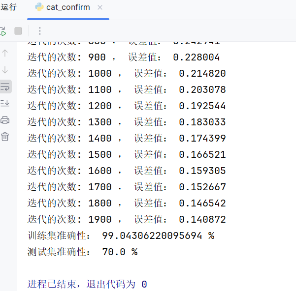
第三周（编程）
构建一个神经网络
准备一些软件包：
numpy：是用Python进行科学计算的基本软件包。
sklearn：为数据挖掘和数据分析提供的简单高效的工具。
matplotlib ：是一个用于在Python中绘制图表的库。
testCases：提供了一些测试示例来评估函数的正确性，参见下载的资料或者在底部查看它的代码。
planar_utils ：提供了在这个任务中使用的各种有用的功能，参见下载的资料或者在底部查看它的代码
1 | import numpy as np |
加载和查看数据集
1 | X, Y = load_planar_dataset() |
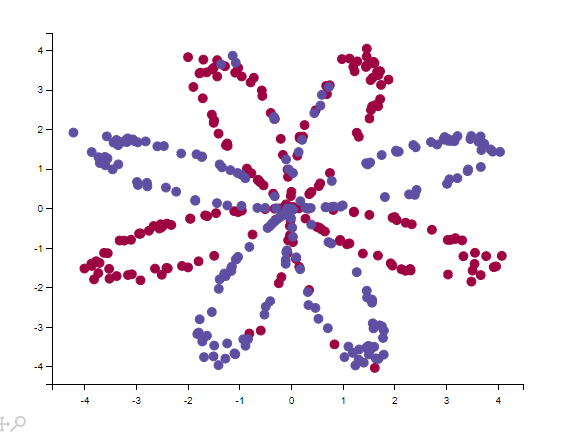
数据看起来像一朵红色（y = 0）和一些蓝色（y = 1）的数据点的花朵的图案。 我们的目标是建立一个模型来适应这些数据。现在，我们已经有了以下的东西：
- X：一个numpy的矩阵，包含了这些数据点的数值
- Y：一个numpy的向量，对应着的是X的标签【0 | 1】（红色:0 ， 蓝色 :1）
我们继续来仔细地看数据：
1 | shape_X = X.shape |
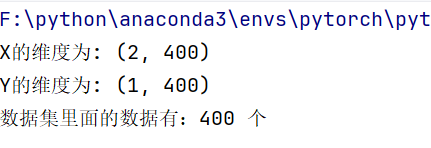
这里我们假如使用逻辑回归，那么效果如下：
1 | clf = sklearn.linear_model.LogisticRegressionCV() |
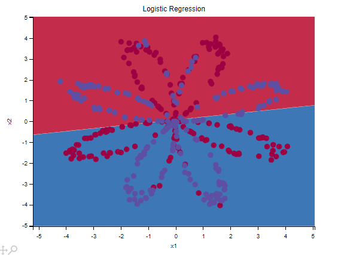
构建神经网络
如下：
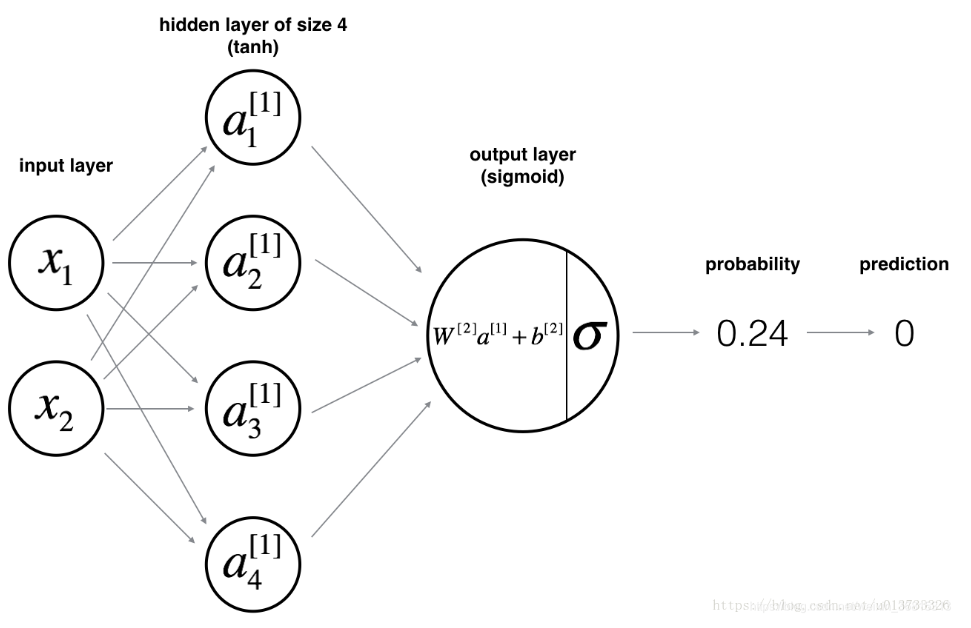
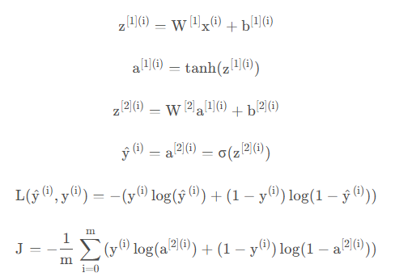
构建神经网络的一般方法是：
定义神经网络结构（输入单元的数量，隐藏单元的数量等）。
初始化模型的参数
循环：
实施前向传播
计算损失
实现向后传播
更新参数（梯度下降）
定义神经网络结构
1 | def layer_sizes(X , Y): |
初始化参数
1 | # 初始化模型参数 |
为什么乘0.01：
- 避免梯度消失/爆炸问题:
- 如果初始化的权重过大,在反向传播过程中,权重更新的梯度可能会非常大,导致参数更新过快,使得训练过程不稳定,甚至发生梯度爆炸。
- 相反,如果初始化的权重过小,在反向传播过程中,权重更新的梯度可能会非常小,导致参数更新过慢,使得训练过程进展缓慢,发生梯度消失。
- 有利于模型训练收敛:
- 通过将权重初始化为较小的值(乘以
0.01),可以帮助模型在训练初期就能找到一个较好的起始点,从而更快地收敛到最优解。
- 通过将权重初始化为较小的值(乘以
- 防止饱和:
- 如果权重初始化过大,可能会使得神经网络的激活函数(如 sigmoid 或 tanh)处于饱和区域,导致梯度更新缓慢。
前向传播
1 | # 前向传播 |
计算损失
1 | def compute_cost(A2, Y, parameters): |
向后传播
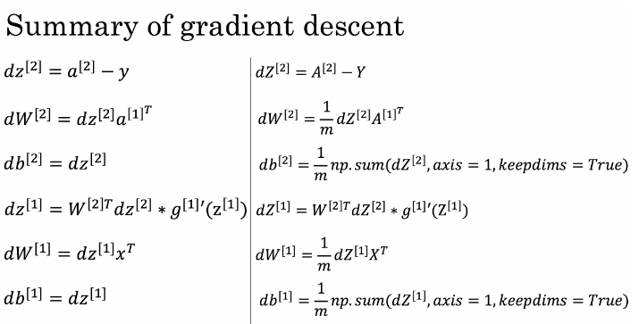
1 | # 向后传播 |
tanh求导为1-tanh平方
更新参数
1 | def update_parameters(parameters,grads,learning_rate=1.2): |
整合模型
1 | def nn_model(X,Y,n_h,num_iterations,print_cost=False): |
预测
1 | def predict(parameters,X): |
搭建完成，进行测试
1 | parameters = nn_model(X, Y, n_h = 4, num_iterations=10000, print_cost=True) |
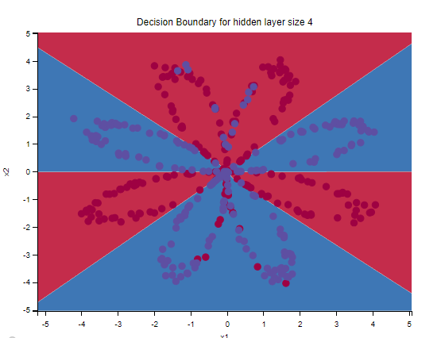